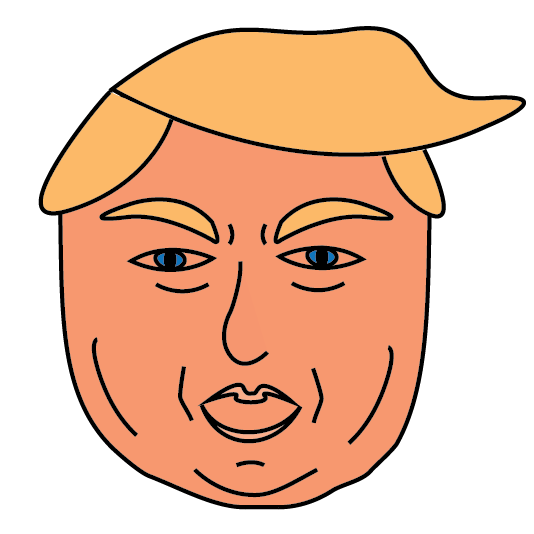

Trump Replacer (Chrome Extension)
When Donald Trump was elected president of the United States we all dealt with it differently. I dealt with it by writing a Chrome Extension that replaces the name "Donald Trump" with a slew of hilarious nicknames. It makes the news really fun to read. While this project was not iterative and did not follow a UCD design process in the traditional sense, I do feel it demonstrates my ability to execute my ideas effectively. The plug-in is written in Javascript. By bundling it with the vector Trump icon I demonstrated my ability to follow through on my ideas and ship products.
Goal: Create a Chrome Extension that would make reading news about Donald Trump more amusing.
Constraints: Learning to use the Chrome Extension developer tools.
Outcome: Hilarity. Making the news a lot more fun to read.
Goal: Create a Chrome Extension that would make reading news about Donald Trump more amusing.
Constraints: Learning to use the Chrome Extension developer tools.
Outcome: Hilarity. Making the news a lot more fun to read.

Initial JS Code: To begin this project I began by learning to use the Chrome Developer Framework. After I was comfortable with the process I began experimenting with different Javascript methods for replacing text. Next began the process of gathering "nicknames" for Donald from online databases. The key decision set I was faced with at this point was balancing script run time with catching the different variations of his name (i.e. Donald Trump, Donald J. Trump, Donald T., etc.)

Vector Icon: To package my script as a full product I needed to create a vector icon to represent the Extension in the Chrome Toolbar. I created the icon in Illustrator. I aimed to make a stylized caricature of the President that would look good as a 128 x 128 pixel icon. I believe I succeeded in that goal.

Packaging: To complete my project I loaded my Extension and icon into my Chrome Developer tools and put it to work on the news. It makes me laugh everyday. If you want the Trump Replacer in your life please don't hesitate to send me an email and I will pass it over!